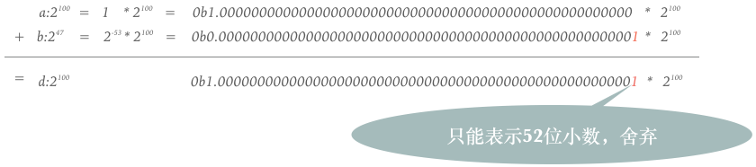

<html>
<head>
	<title>V8 引擎如何生成 x64 机器码-以浮点数加法为例</title>
	<meta charset="UTF-8">
	<meta name="viewport" content="width=device-width,initial-scale=1,maximum-scale=1,minimum-scale=1,user-scalable=no">
	<meta content="telephone=no" name="format-detection">
	<meta name="apple-touch-fullscreen" content="yes">
	<meta name="apple-mobile-web-app-capable" content="yes">
	<meta name="apple-mobile-web-app-status-bar-style" content="black">
	<link href="./assets/x.png" rel="shortcut icon" type="image/x-icon">
	<link rel="stylesheet" href="./css/reset.css">
</head>
<body>
	<div class="content">
		<h2>V8 引擎如何生成 x64 机器码</h2>
		<h3 style="text-align: center;font-size: 16px;"><b style="transform: scaleX(2);display: inline-block;transform-origin: right;">—</b>以浮点数加法为例</h3>
		<h3>摘要</h3>
		<div>
			本文将主要从以下 3 个方面介绍 V8 引擎如何在 Intel x64 平台下生成浮点数加法的机器码。首先，简要介绍一下 V8 引擎；然后，从 C 语言和 x64 汇编的角度举例说明为什么浮点数加法的运算结果不准确；最后，查看 V8 引擎中生成浮点数加法机器码相关的源码。
		</div>
		<h3>V8 简介</h3>
		<div>
			V8 是一个由 Google 开源的高性能 JavaScript 和 WebAssembly 引擎，其源代码使用 C++ 编写。V8 被用于 Google 的开源浏览器 Chrome 中，同时也被用于 Node.js，以及其他一些软件中。V8 实现了 ECMAScript 和 WebAssembly 标准，可以运行在 Windows 7 及以上，macOS 10.12+，以及 x64、IA-32、ARM、MIPS 架构的 Linux 系统。V8 可以独立运行，也可以被嵌入到 C++ 应用程序中。
		</div>
		<div><a href="https://cs.chromium.org/chromium/src/v8/?g=0" target="_blank">V8 源码</a>可在浏览器中查看，这个网站在代码浏览与检索方面的功能十分强大，可以快速的查看 C++ 变量的定义和引用。缺点是不能查看 V8 某个版本或某个 git tag 的源码，但依然强烈推荐。如果想要查看 V8 某个 tag 的源码，可以访问<a href="https://chromium.googlesource.com/v8/v8.git" target="_blank"> v8.git </a>。如果想要在本地编译 V8 源码，在参考<a href="https://v8.dev/docs/build-gn" target="_blank"> V8 官方文档</a>的基础上，还要注意墙的问题，浏览器能访问 google 不代表终端也能访问 google，终端也需要设置代理。</div>
		<div>
			以V8 7.7.0版本为例，源码目录结构如下：
		</div>
		
		<div>
			有10余个文件夹，存放源码的文件夹为 src 和 third_party，做为一个前端，我们真正关心的源码位于 src 目录，其它目录粗略概述如下：
		</div>
		<ul>
			<li>测试：benchmarks、test、testing、infra</li>
			<li>C++ 项目嵌入 V8：include、samples</li>
			<li>编译构建：build、build_overrides、buildtools、gni</li>
			<li>文档：docs，实际上文件夹下除了一个链接<a href="https://v8.dev/docs" target="_blank"> https://v8.dev/docs </a>外，其它内容可忽略</li>
			<li>V8 编译成功后的产物：out</li>
			<li>工具：tools</li>
			<li>其它：base 文件夹下有几百行代码，具体作用不详；custom_deps 文件夹下没有代码</li>
		</ul>
		<div>
			V8 绝大多数的源码由 C++ 编写，少数情况会使用内联汇编，我们真正需要看的源码全部位于 src 文件夹下：
		</div>
		
		<div>
			V8 编译 JavaScript 代码的过程如下：
		</div>
		
		<div>
			parser 将 JavaScript 代码转换成 AST ，代码位于 src/parsing 和 src/ast。interpreter 从 AST 生成字节码，并解释执行。代码位于 src/interpreter。当一段代码被执行多次变成热点代码时，V8 optimizing compiler 会把字节码编译生成机器码。代码位于 src/compiler 和 src/codegen。
		</div>
		<div>
			V8 的早期版本没有解释器，从 AST 直接生成机器码，这种方法的缺点是机器码比较占内存，而且有些代码只会执行一次，比如做业务需求时经常见到的：
		</div>
		<pre>
	function init () {
		var app = new Vue({
		  	el: '#app',
		  	data: {
		  		someKey: someValue
		  	}
		})
	}</pre>
		<div>
			在一个 Web 前端页面里，这段代码只会执行一次，如果没有解释器，这段 JavaScript 代码在一开始就会被编译成机器码，执行。做为 Vue 框架的使用者，我们知道这段代码只会被执行一次。但 V8 无法确定这段代码是否只会被执行一次，执行一次后，机器码还是会继续占用内存。所以在2016年，V8 引入了解释器 Ignition。
		</div>
		<h3>为什么 JavaScript 浮点数运算不精确</h3>
		<div>网络上相关的文章非常多，浮点数运算不精确的语言不只 JavaScript，C/C++/Java/Python/Matlab 做浮点数运算也不精确，甚至汇编也是如此。如以下 C 代码：</div>
		<pre>
	#include &lt;stdio.h&gt;
	#include &lt;math.h&gt;
	int main() {
		double a = pow(2, 100);
		double b = pow(2, 47);
		double c = pow(2, 48);
		double d = a + b;
		double e = a + c;
		printf("a == d is %d\n", a == d);
		printf("a == e is %d\n", a == e);
	}</pre>
		<div>在 Xcode 中运行结果如下：</div>
		
		<div>为什么会是这样的结果呢？因为计算机中浮点数表示遵循 IEEE 754 标准，JavaScript 中浮点数为双精度浮点数，双精度浮点数表示如下：</div>
		
		<div>双精度浮点数在内存占 64bit，可分为 3 部分：</div>
		<div>第一部分是符号，占 1bit，负数为1，正数为0。</div>
		<div>第二部分是指数，占 11bit，指数的值为 1023 + 指数。</div>
		<div>第三部分是尾数，占 52bit，表示小数，本文暂不涉及。</div>
		<div>以<span class="pr"> 2 &nbsp;&nbsp;&nbsp;<span class="super">100</span></span>为例，以 2 为基表示为 1 &times;<span class="pr"> 2 &nbsp;&nbsp;&nbsp;<span class="super">100</span></span>，按照 IEEE 754 标准：</div>
		<div><span class="pr"> 2 &nbsp;&nbsp;&nbsp;<span class="super">100</span></span>大于 0，第一部分符号位为 0。</div>
		<div>因为指数是 100，所以第二部分的值是 1023 + 100 ，即 1123，使用 JavaScript 的 <a href="https://developer.mozilla.org/zh-CN/docs/Web/JavaScript/Reference/Global_Objects/Number/toString" target="_blank"> Number.prototype.toString </a>方法，得到十进制数字 1123 的 16 进制表示为 0x463。JavaScript 代码如下：</div>
		<pre>
	num = 1123;
	num.toString(16); // 结果为463</pre>
		<div>由于没有小数，第三部分全是0；</div>
		<div>将符号、指数和尾数结合起来，<span class="pr"> 2 &nbsp;&nbsp;&nbsp;<span class="super">100</span></span>在内存中的表示为 0x4630000000000000 ，在 Xcode 中查看内存如下，红色框内分别为上文 C 代码中变量 a，d，e 在内存中的表示。</div>
		
		<div>可在<a href="https://tool.lu/coderunner/" target="_blank"> https://tool.lu/coderunner/ </a>编辑运行以上 C 代码。</div>
		
		<div>为什么在数学上 a 明明小于 d，可实际结果 a 却等于 d 呢？</div>
		<div>
			若<span class="pr"> 2 &nbsp;&nbsp;&nbsp;<span class="super" style="left: -12px;">47</span></span>与<span class="pr"> 2 &nbsp;&nbsp;&nbsp;<span class="super">100</span></span>相加，由于二者指数不一样，前者需求移位，与后者的指数对齐，移位后表示成二进制如下：
		</div>
		<pre>
	0.0000 0000 0000 0000 0000 0000 0000 0000 0000 0000 0000 0000 0000 1 &times; <span class="pr"> 2 &nbsp;&nbsp;&nbsp;&nbsp;&nbsp;&nbsp;&nbsp;&nbsp;&nbsp;&nbsp;<span class="super" style="left: 1px;top: -9px;">1100100</span></span> // 小数点后面有 52 个 0，1 个 1，共 53bit</pre>
		<div>
			由于 IEEE 754 只能表示 52bit 小数，而<span class="pr"> 2 &nbsp;&nbsp;&nbsp;<span class="super" style="left: -12px;">47</span></span>移位对齐后的小数有 53bit，这 53bit 里面前 52bit 都是 0，保留，最低 bit 位是 1，舍弃。<span class="pr"> 2 &nbsp;&nbsp;&nbsp;<span class="super" style="left: -12px;">47</span></span>经过移位对齐后变成了0。所以在计算机中 a 等于 d。
		</div>
		<div>
			若<span class="pr"> 2 &nbsp;&nbsp;&nbsp;<span class="super" style="left: -12px;">48</span></span>与<span class="pr"> 2 &nbsp;&nbsp;&nbsp;<span class="super">100</span></span>相加，同理，为与后者的指数对齐，前者需求移位，表示成二进制如下，此时不存在小数被舍弃的情况。
		</div>
		<pre>
	0.0000 0000 0000 0000 0000 0000 0000 0000 0000 0000 0000 0000 0001 &times; <span class="pr"> 2 &nbsp;&nbsp;&nbsp;&nbsp;&nbsp;&nbsp;&nbsp;&nbsp;&nbsp;&nbsp;<span class="super" style="left: 1px;top: -9px;">1100100</span></span> // 小数点后面有 52bit，IEEE 754 标准可以精确表示</pre>
		
		<h3>V8 如何生成浮点数加法的机器码</h3>
		<div>通过在 Xcode 中查看上一段 C 代码生成的 x64 汇编和<a href="https://www.intel.com/content/www/us/en/architecture-and-technology/64-ia-32-architectures-software-developer-manual-325462.html" target="_blank"> Intel 软件手册</a> 可知，x64 平台浮点数加法指令为 addsd 或 vaddsd。</div>
		
		
		<div>因为在 V8 引擎中 JavaScript 代码最开始是解释执行的，为了生成机器码，以下代码特意在浮点数加法外添加一层看似多余的 for 循环，目的是把一段 JavaScript 代码反复执行，变成热点代码，从而最终生成机器码。</div>
		
		<div>将目录切换至 V8 目录，执行以下命令</div>
		<pre>
	./out/x64.debug/d8  --print-opt-code ./fenxiang/double.js</pre>
		<div>
			./out/x64.debug/d8 是 V8 编译后的可执行文件 d8，d 是 debug 的缩写，--print-opt-code 参数的含义是打印汇编，./fenxiang/double.js 是刚才我们看到的 JavaScript 代码。执行完命令后，终端有反汇编输出，说明我们的 JavaScript 代码已被编译为机器码，和浮点数加法相关的反汇编截取如下：
		</div>
		
		<div>从输出可以看到浮点数加法的汇编语句:</div>
		<pre>
	addsd xmm1, xmm0</pre>
		<div>及其对应的机器码 f20f58c8 ，下面开始看 V8 源码，生成这段机器码的方法是<a href="https://chromium.googlesource.com/v8/v8.git/+/refs/heads/7.7.1/src/codegen/x64/assembler-x64.cc#3770" target="_blank"> Assembler::addsd </a>。</div>
		<pre>
	void Assembler::addsd(XMMRegister dst, XMMRegister src) {
	  	EnsureSpace ensure_space(this);
	  	emit(0xF2);
	  	emit_optional_rex_32(dst, src);
	  	emit(0x0F);
	  	emit(0x58);
	  	emit_sse_operand(dst, src);
	}</pre>
		<div>addsd 方法内部 3 次调用 emit 方法，3 次调用 emit 方法的参数分别为 0xF2，0x0F，0x58，对比 Intel 软件手册，可知这 3 个参数对应 addsd 指令的机器码。</div>
		
		<div>而<a href="https://chromium.googlesource.com/v8/v8.git/+/refs/heads/7.7.1/src/codegen/x64/assembler-x64.h#1795" target="_blank"> emit </a>方法定义如下：</div>
		<pre>
	void emit(byte x) { *pc_++ = x; }</pre>
		<div>pc_是一个字节指针，*pc_++ 相当于先执行 pc++，然后执行 *pc_ = x；emit 方法的作用是将传入的机器码，也就是参数 x，写入内存。变量取名为 pc_，个人猜测是因为多数 CPU 都有一个特殊功能寄存器指向下一条要执行的指令的地址，即程序计数器 PC（Program Counter），x86 中相应的特殊寄存器为 IP（Instruction Pointer）。机器码的执行与生成可以理解为两个相反的过程。机器码在执行阶段会连续从 PC 寄存器指向的内存中读取机器码；而机器码在生成阶段会连续向 pc_ 指针指向的内存中写入机器码。</div>
		<div>至此，addsd xmm1, xmm0 语句对应的 4 字节机器码 f20f58c8，我们已经分析了其中 3 个字节；因 emit_optional_rex_32 方法没有生成机器码，本文忽略。下面开始分析最后的 1 字节机器码 c8 是如何生成的。这里分别从 Intel 机器码定义和 V8 源码两个角度进行分析。</div>
		<div>从 Intel x64 机器码定义的角度来看，可以简述如下，因 addsd xmm1, xmm0 的两个操作数都是寄存器，故 bit7 - bit6 是 11，xmm1 的序号为 001，故 bit5 - bit3 为 001，xmm0 的序号为 000，故 bit2 - bit0 为 000。所以 addsd xmm1, xmm0 语句的机器码的最后一个字节为 c8，可参考下图。</div>
		<div style="text-align: center;">
			
				
		</div>
		
		<div>从 V8 源码的角度来看，<a href="https://chromium.googlesource.com/v8/v8.git/+/refs/heads/7.7.1/src/codegen/x64/assembler-x64.cc#4746" target="_blank"> emit_sse_operand </a>定义如下：</div>
		<pre>
	void Assembler::emit_sse_operand(XMMRegister dst, XMMRegister src) {
  		emit(0xC0 | (dst.low_bits() << 3) | src.low_bits());
	}</pre>
		<div>
			方法只有一行代码，代码逻辑完全遵守 Intel 手册中关于机器码的定义。首先，bit 7 - bit 6 是 11，对应源码中的 16 进制 0xC0。src 和 dst 是用来描述 x64 中 xmm0 和 xmm1 寄存器的 C++ 对象。类 XMMRegister 继承自类 RegisterBase，相应的继承了类 RegisterBase 的 <a href="https://chromium.googlesource.com/v8/v8.git/+/refs/heads/7.7.1/src/codegen/register.h#105" target="_blank"> reg_code_ </a> 字段，reg_code_ 字段表示 Intel 软件手册规定的寄存器的序号。而 emit-sse-operand 方法中的两个参数 src 和 dst，src 对象描述的寄存器是 xmm0，相应的 reg_code_ 字段为 0；dst 对象描述的寄存器是 xmm1，相应的 reg_code_ 字段为 1。
		</div>
		<pre>
	class RegisterBase {
		// 此处省略若干行。。。
		protected:
  		explicit constexpr RegisterBase(int code) : reg_code_(code) {}
  		int reg_code_;
	};</pre>
		<div><a href="https://chromium.googlesource.com/v8/v8.git/+/refs/heads/7.7.1/src/codegen/x64/register-x64.h#161" target="_blank"> low_bits </a>方法定义如下，实际上是取了 reg_code_ 字段的低 3 位，回头再看 emit-sse-operand 方法，可知 dst.low_bits() << 3 的值是 8，src.low_bits() 的值是 0。0xC0 | (dst.low_bits() << 3) | src.low_bits() 即相当于0xC0 | 8 | 0，结果刚好为 0xC8。</div>
		<pre>
	class XMMRegister : public RegisterBase<XMMRegister, kDoubleAfterLast> {
 		public:
 		// Return the 3 low bits of the register code.  Used when encoding registers
  		// in modR/M, SIB, and opcode bytes.
  		int low_bits() const { return reg_code_ & 0x7; }
  		// 此处省略若干行。。。
	};</pre>
		<div>
			至此，addsd xmm1, xmm0 对应的 4 字节机器码全部分析完毕。Assembler 类的大多数方法的名字都对应一条 x64 汇编指令的名字，方法内部的功能是把对应的汇编指令的机器码写入内存，对汇编还有印象的同学应该能在类 Assembler 的实现中看到很多熟悉的内容。
		</div>
		
	</div>
</body>
</html>